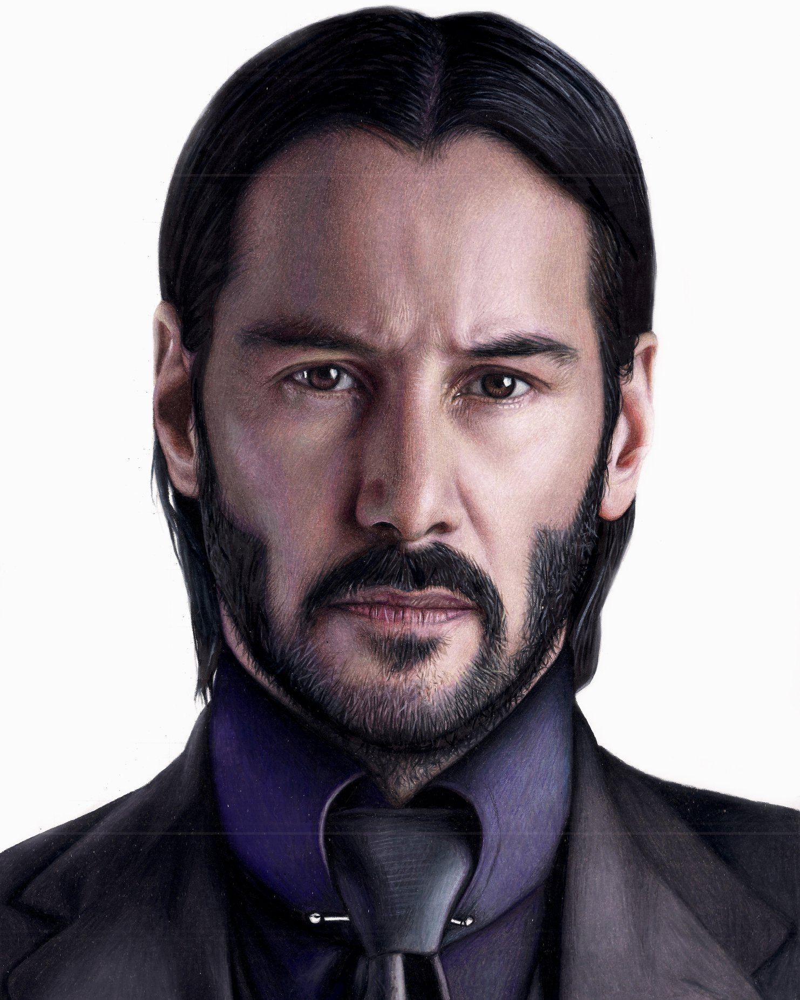

ANGELO STEEVEN SALAMANCA MOGOLLÓN
12 de junio de 1999
Soy angelo steeven salamanca mogollón, soy estudiante de ingenieria de sistemas de la UFPS, actualmente curso el septimo semestre de mi carrerar. De niño me gustaba mucho ver dragon ball Z y aun me sigue gustando. Me gusta jugar futbol y hacer mucho deporte en general. En la musica me gusta el rock, el rock en español, el EDM. Vivo con mis padres y mis hermanos. actualmente no trabajo pero tengo experiencia en algunos sectores de la educacion.
Estudio ingenieria de sistemas en la UFPS. La carrera me parece que es una de las mejores sino la mejor carrera para estudiar viendo hacie el futuro. Me gusta mucho el buen ambiente que tienen las personas de la carrera. La materia que mas me ha gustado en la ingenieria es la de fundamentos de programación, la que menos me ha gustado es fisica. En 5 años me veo como un ingeniero en sistemas especializado en educación.